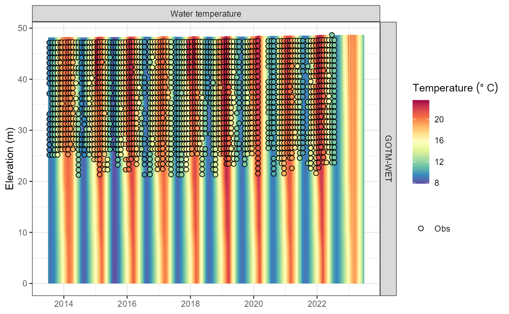

Using LERNZmp with AEME
lernzmp-aeme.RmdIntroduction
The Lake Ecosystem Research New Zealand Model Platform (LERNZmp) is a web platform that provides a user-friendly interface to the lake ecosystem model output for New Zealand lakes. The platform is designed to provide a simple way to explore the model output across multiple lakes and also to compare the model results with observed data.
The platform is located here: LERNZmp. Select and load a lake model output on the “Overview” tab. The model output can be downloaded in the “Download Models” tab. This downloads a “.zip” folder containing the model output for the selected lake(s) as “.rds” files and a lake metadata file “LERNZmp_lake_metadata.csv”.
Using LERNZmp output with AEME
Once you have downloaded the LERNZmp model output and unzipped the folder, you should a similar file structure to the following:
list.files("lernzmp")
#> [1] "LERNZmp_lake_metadata.csv" "LID11133.rds"
#> [3] "LID40102.rds"LERNZmp metadata
The metadata file contains information about the all the lakes in the LERNZmp platform. This includes the lake ID, name surface area (ha), region, geomorphic type, depth, depth measurement (measured or predicted), data (no data/minimal data/limited and irregular/periodic but sparse/seasonal but detailed) and lernzmp file name.
metadata <- read.csv("lernzmp/LERNZmp_lake_metadata.csv")
head(metadata)
#> ID Name Area Region Geomorphic.type Depth
#> 1 LID 1 Onoke 622.34 Wellington Shoreline 8.72
#> 2 LID 3 Kohangapiripiri 10.82 Wellington Shoreline 14.43
#> 3 LID 4 Kohangatera 21.31 Wellington Shoreline 14.80
#> 4 LID 119 LID 119 41.87 Wellington Riverine 3.55
#> 5 LID 195 Nganoke 3.10 Wellington Riverine 3.74
#> 6 LID 229 Pounui 45.95 Wellington Tectonic NA
#> Depth.measurement Data aeme_file
#> 1 Measured Minimal Data LID1
#> 2 Predicted No data LID3
#> 3 Predicted No data LID4
#> 4 Predicted No data LID119
#> 5 Predicted No data LID195
#> 6 Predicted No data LID229RDS files
RDS files are binary files that store R objects, such as data sets,
and are a native format for R. RDS files preserve data types and classes
and are generally smaller than their text file counterparts. The AEME
objects are an S4 object of the class Aeme. This object
class an store model configuration, inputs and outputs and allows for
the easy transfer of a lake model setup.
The lakes included in this example have ID’s LID11133 and LID40102. We will filter the metadata to examine these two lakes.
metadata <- metadata |>
dplyr::filter(aeme_file %in% c("LID11133", "LID40102"))
metadata
#> ID Name Area Region Geomorphic.type Depth
#> 1 LID 11133 Rotorua 8060.23 Bay of Plenty Volcanic 45.27
#> 2 LID 40102 Rotoma 1113.68 Bay of Plenty Volcanic 89.13
#> Depth.measurement Data aeme_file
#> 1 Measured Seasonal but Detailed LID11133
#> 2 Measured Seasonal but Detailed LID40102These are lakes Rotorua (LID11133) and Rotoma (LID40102), respectively.
Build AEME models
We will now build AEME models for these two lakes using the LERNZmp model output. We will first load the AEME object from the “.rds” files.
The Aeme object contains the lake metadata, model
output, and model controls. More details can be found
vignette("intro-aeme"). It is an S4 object of the class
Aeme.
First, make sure to install the AEME package.
#> ℹ Loading metadata database
#> ✔ Loading metadata database ... done
#>
#>
#> → Will install 49 packages.
#> → Will update 1 package.
#> → Will download 49 CRAN packages (119.38 MB), cached: 1 (0 B).
#> + AEME 0.1.0 → 0.1.0 [bld][cmp] (GitHub: 147a74a)
#> + classInt 0.4-10 [cmp][dl] (505.04 kB)
#> + cli 3.6.3 [cmp][dl] (1.36 MB)
#> + colorspace 2.1-1 [cmp][dl] (2.67 MB)
#> + DBI 1.2.3 [dl] (937.78 kB)
#> + dplyr 1.1.4 [cmp][dl] (1.58 MB)
#> + e1071 1.7-16 [cmp][dl] (671.93 kB)
#> + fansi 1.0.6 [cmp][dl] (322.97 kB)
#> + farver 2.1.2 [cmp][dl] (1.52 MB)
#> + generics 0.1.3 [dl] (83.69 kB)
#> + ggplot2 3.5.1 [dl] (5.01 MB)
#> + glue 1.8.0 [cmp][dl] (183.78 kB)
#> + gtable 0.3.6 [dl] (249.79 kB)
#> + isoband 0.2.7 [cmp][dl] (1.93 MB)
#> + labeling 0.4.3 [dl] (63.36 kB)
#> + lifecycle 1.0.4 [dl] (140.93 kB)
#> + lubridate 1.9.3 [cmp][dl] (987.20 kB)
#> + lwgeom 0.2-14 [cmp][dl] (10.95 MB)
#> + magrittr 2.0.3 [cmp][dl] (229.42 kB)
#> + munsell 0.5.1 [dl] (244.68 kB)
#> + ncdf4 1.23 [cmp][dl] (7.29 MB)
#> + patchwork 1.3.0 [dl] (3.35 MB)
#> + pillar 1.9.0 [dl] (663.33 kB)
#> + pkgconfig 2.0.3 [dl] (22.81 kB)
#> + plyr 1.8.9 [cmp][dl] (1.11 MB)
#> + proxy 0.4-27 [cmp][dl] (181.19 kB)
#> + psychrolib 2.5.2 [cmp][dl] (487.49 kB)
#> + purrr 1.0.2 [cmp][dl] (510.64 kB)
#> + R6 2.5.1 [dl] (84.98 kB)
#> + RColorBrewer 1.1-3 [dl] (54.47 kB)
#> + Rcpp 1.0.13-1 [cmp][dl] (2.90 MB)
#> + rLakeAnalyzer 1.11.4.1 [dl] (605.05 kB)
#> + rlang 1.1.4 [cmp][dl] (1.62 MB)
#> + s2 1.1.7 [cmp][dl] (4.09 MB)
#> + scales 1.3.0 [cmp][dl] (714.75 kB)
#> + sf 1.0-19 [cmp][dl] (40.98 MB)
#> + stringi 1.8.4 [cmp][dl] (15.03 MB)
#> + stringr 1.5.1 [dl] (323.42 kB)
#> + tibble 3.2.1 [cmp][dl] (695.05 kB)
#> + tidyr 1.3.1 [cmp][dl] (1.27 MB)
#> + tidyselect 1.2.1 [cmp][dl] (228.15 kB)
#> + timechange 0.3.0 [cmp][dl] (514.48 kB)
#> + units 0.8-5 [cmp][dl] (784.55 kB)
#> + utf8 1.2.4 [cmp][dl] (150.80 kB)
#> + vctrs 0.6.5 [cmp][dl] (1.36 MB)
#> + viridisLite 0.4.2 [dl] (1.30 MB)
#> + withr 3.0.2 [dl] (231.37 kB)
#> + wk 0.9.4 [cmp][dl] (2.05 MB)
#> + yaml 2.3.10 [cmp][dl] (119.45 kB)
#> + zoo 1.8-12 [cmp][dl] (1.03 MB)
#> ℹ Getting 49 pkgs (119.38 MB), 1 cached
#> ✔ Got cli 3.6.3 (i386+x86_64-w64-mingw32) (1.36 MB)
#> ✔ Got DBI 1.2.3 (i386+x86_64-w64-mingw32) (941.47 kB)
#> ✔ Got dplyr 1.1.4 (i386+x86_64-w64-mingw32) (1.59 MB)
#> ✔ Got e1071 1.7-16 (i386+x86_64-w64-mingw32) (672.44 kB)
#> ✔ Got magrittr 2.0.3 (i386+x86_64-w64-mingw32) (229.11 kB)
#> ✔ Got munsell 0.5.1 (i386+x86_64-w64-mingw32) (246.01 kB)
#> ✔ Got plyr 1.8.9 (i386+x86_64-w64-mingw32) (1.11 MB)
#> ✔ Got classInt 0.4-10 (i386+x86_64-w64-mingw32) (504.95 kB)
#> ✔ Got colorspace 2.1-1 (i386+x86_64-w64-mingw32) (2.67 MB)
#> ✔ Got psychrolib 2.5.2 (i386+x86_64-w64-mingw32) (487.46 kB)
#> ✔ Got Rcpp 1.0.13-1 (i386+x86_64-w64-mingw32) (2.88 MB)
#> ✔ Got rLakeAnalyzer 1.11.4.1 (i386+x86_64-w64-mingw32) (606.16 kB)
#> ✔ Got rlang 1.1.4 (i386+x86_64-w64-mingw32) (1.62 MB)
#> ✔ Got yaml 2.3.10 (i386+x86_64-w64-mingw32) (117.04 kB)
#> ✔ Got stringr 1.5.1 (i386+x86_64-w64-mingw32) (324.14 kB)
#> ✔ Got tibble 3.2.1 (i386+x86_64-w64-mingw32) (695.40 kB)
#> ✔ Got tidyr 1.3.1 (i386+x86_64-w64-mingw32) (1.27 MB)
#> ✔ Got pillar 1.9.0 (i386+x86_64-w64-mingw32) (663.49 kB)
#> ✔ Got pkgconfig 2.0.3 (i386+x86_64-w64-mingw32) (23.00 kB)
#> ✔ Got lubridate 1.9.3 (i386+x86_64-w64-mingw32) (989.98 kB)
#> ✔ Got patchwork 1.3.0 (i386+x86_64-w64-mingw32) (3.35 MB)
#> ✔ Got isoband 0.2.7 (i386+x86_64-w64-mingw32) (1.93 MB)
#> ✔ Got gtable 0.3.6 (i386+x86_64-w64-mingw32) (250.32 kB)
#> ✔ Got ncdf4 1.23 (i386+x86_64-w64-mingw32) (7.28 MB)
#> ✔ Got vctrs 0.6.5 (i386+x86_64-w64-mingw32) (1.34 MB)
#> ✔ Got viridisLite 0.4.2 (i386+x86_64-w64-mingw32) (1.30 MB)
#> ✔ Got withr 3.0.2 (i386+x86_64-w64-mingw32) (232.10 kB)
#> ✔ Got lifecycle 1.0.4 (i386+x86_64-w64-mingw32) (141.91 kB)
#> ✔ Got proxy 0.4-27 (i386+x86_64-w64-mingw32) (180.54 kB)
#> ✔ Got zoo 1.8-12 (i386+x86_64-w64-mingw32) (1.03 MB)
#> ✔ Got fansi 1.0.6 (i386+x86_64-w64-mingw32) (320.43 kB)
#> ✔ Got utf8 1.2.4 (i386+x86_64-w64-mingw32) (149.20 kB)
#> ✔ Got purrr 1.0.2 (i386+x86_64-w64-mingw32) (510.98 kB)
#> ✔ Got R6 2.5.1 (i386+x86_64-w64-mingw32) (85.25 kB)
#> ✔ Got RColorBrewer 1.1-3 (i386+x86_64-w64-mingw32) (54.57 kB)
#> ✔ Got timechange 0.3.0 (i386+x86_64-w64-mingw32) (507.15 kB)
#> ✔ Got units 0.8-5 (i386+x86_64-w64-mingw32) (783.33 kB)
#> ✔ Got wk 0.9.4 (i386+x86_64-w64-mingw32) (2.04 MB)
#> ✔ Got glue 1.8.0 (i386+x86_64-w64-mingw32) (183.12 kB)
#> ✔ Got tidyselect 1.2.1 (i386+x86_64-w64-mingw32) (229.99 kB)
#> ✔ Got AEME 0.1.0 (source) (27.95 MB)
#> ✔ Got stringi 1.8.4 (i386+x86_64-w64-mingw32) (15.01 MB)
#> ✔ Got labeling 0.4.3 (i386+x86_64-w64-mingw32) (63.85 kB)
#> ✔ Got farver 2.1.2 (i386+x86_64-w64-mingw32) (1.51 MB)
#> ✔ Got generics 0.1.3 (i386+x86_64-w64-mingw32) (83.89 kB)
#> ✔ Got scales 1.3.0 (i386+x86_64-w64-mingw32) (721.01 kB)
#> ✔ Got ggplot2 3.5.1 (i386+x86_64-w64-mingw32) (5.02 MB)
#> ✔ Got s2 1.1.7 (i386+x86_64-w64-mingw32) (4.07 MB)
#> ✔ Got lwgeom 0.2-14 (i386+x86_64-w64-mingw32) (10.95 MB)
#> ✔ Got sf 1.0-19 (i386+x86_64-w64-mingw32) (40.08 MB)
#> ✔ Installed classInt 0.4-10 (133ms)
#> ✔ Installed DBI 1.2.3 (204ms)
#> ✔ Installed cli 3.6.3 (309ms)
#> ✔ Installed dplyr 1.1.4 (266ms)
#> ✔ Installed colorspace 2.1-1 (425ms)
#> ✔ Installed e1071 1.7-16 (230ms)
#> ✔ Installed fansi 1.0.6 (216ms)
#> ✔ Installed farver 2.1.2 (231ms)
#> ✔ Installed generics 0.1.3 (234ms)
#> ✔ Installed ggplot2 3.5.1 (326ms)
#> ✔ Installed glue 1.8.0 (318ms)
#> ✔ Installed gtable 0.3.6 (293ms)
#> ✔ Installed isoband 0.2.7 (209ms)
#> ✔ Installed labeling 0.4.3 (302ms)
#> ✔ Installed lifecycle 1.0.4 (310ms)
#> ✔ Installed lubridate 1.9.3 (340ms)
#> ✔ Installed magrittr 2.0.3 (206ms)
#> ✔ Installed munsell 0.5.1 (199ms)
#> ✔ Installed ncdf4 1.23 (230ms)
#> ✔ Installed patchwork 1.3.0 (235ms)
#> ✔ Installed pillar 1.9.0 (217ms)
#> ✔ Installed lwgeom 0.2-14 (733ms)
#> ✔ Installed pkgconfig 2.0.3 (221ms)
#> ✔ Installed plyr 1.8.9 (205ms)
#> ✔ Installed proxy 0.4-27 (217ms)
#> ✔ Installed psychrolib 2.5.2 (263ms)
#> ✔ Installed purrr 1.0.2 (267ms)
#> ✔ Installed R6 2.5.1 (278ms)
#> ✔ Installed RColorBrewer 1.1-3 (247ms)
#> ✔ Installed rLakeAnalyzer 1.11.4.1 (193ms)
#> ✔ Installed rlang 1.1.4 (218ms)
#> ✔ Installed s2 1.1.7 (374ms)
#> ✔ Installed scales 1.3.0 (380ms)
#> ✔ Installed stringr 1.5.1 (173ms)
#> ✔ Installed stringi 1.8.4 (375ms)
#> ✔ Installed tibble 3.2.1 (188ms)
#> ✔ Installed tidyr 1.3.1 (194ms)
#> ✔ Installed tidyselect 1.2.1 (169ms)
#> ✔ Installed Rcpp 1.0.13-1 (1.4s)
#> ✔ Installed timechange 0.3.0 (203ms)
#> ✔ Installed units 0.8-5 (203ms)
#> ✔ Installed utf8 1.2.4 (241ms)
#> ✔ Installed vctrs 0.6.5 (243ms)
#> ✔ Installed viridisLite 0.4.2 (189ms)
#> ✔ Installed withr 3.0.2 (303ms)
#> ✔ Installed sf 1.0-19 (2s)
#> ✔ Installed wk 0.9.4 (640ms)
#> ✔ Installed yaml 2.3.10 (502ms)
#> ✔ Installed zoo 1.8-12 (482ms)
#> ℹ Packaging AEME 0.1.0
#> ✔ Packaged AEME 0.1.0 (33.6s)
#> ℹ Building AEME 0.1.0
#> ✔ Built AEME 0.1.0 (15.6s)
#> ✔ Installed AEME 0.1.0 (github::limnotrack/AEME@147a74a) (455ms)
#> ✔ 1 pkg + 56 deps: kept 7, upd 1, added 49, dld 50 (NA B) [1m 10.1s]Once installed, load the AEME package.
library(AEME)
#>
#> Attaching package: 'AEME'
#> The following object is masked from 'package:stats':
#>
#> timeNow, we will load the AEME object for Lake Rotorua (LID11133).
It can be printed to the console to see the contents of the object.
aeme
#> AEME
#> -------------------------------------------------------------------
#> Lake
#> Rotorua (ID: LID11133); Lat: -38.09; Lon: 176.27; Elev: 284.88m; Depth: 48.15m;
#> Area: 80659960 m2; Shape file: Absent
#> -------------------------------------------------------------------
#> Time
#> Start: 2013-07-01; Stop: 2023-06-30; Time step: 3600
#> Spin up (days): GLM: 1095; GOTM: 1095; DYRESM: 1095
#> -------------------------------------------------------------------
#> Configuration
#> Model controls: Present
#> Physical | Biogeochemical
#> DY-CD : Absent | Absent
#> GLM-AED : Present | Present
#> GOTM-WET : Present | Present
#> -------------------------------------------------------------------
#> Observations
#> Lake: Present; Level: Absent
#> -------------------------------------------------------------------
#> Input
#> Inital profile: Present; Inital depth: 48.148m; Hypsograph: Present (n=95);
#> Meteo: Present; Use longwave: TRUE; Kw: 0.5666667
#> -------------------------------------------------------------------
#> Inflows
#> Data: Present; Scaling factors: DY-CD: 1; GLM-AED: 1; GOTM-WET: 1
#> -------------------------------------------------------------------
#> Outflows
#> Data: Present; Scaling factors: DY-CD: 1; GLM-AED: 1; GOTM-WET: 1
#> -------------------------------------------------------------------
#> Water balance
#> Method: 2; Use: obs; Modelled: Absent; Water balance: Present
#> -------------------------------------------------------------------
#> Parameters:
#> Number of parameters: 18
#> -------------------------------------------------------------------
#> Output:
#> Number of ensembles: 1
#> DY-CD: 1
#> GLM-AED: 1
#> GOTM-WET: 1This allows for quick inspection of all the different slots within
the Aeme object. The lake section has the lake metadata,
the time section has the start, stop and spin-up dates, the
configuration section has the model configuration which allows for the
building of the AEME models locally.
#> Building simulation for Rotorua [2024-11-14 10:34:20]
#> Building existing configuration for Rotorua [2024-11-14 10:34:20]
#> Missing state variables in inflows: CHM_oxy, NIT_don, NIT_pon, CAR_doc, CAR_poc, SIL_rsi, PHY_cyano, PHY_green, PHY_diatom, NCS_ss1
#> Added default values for missing variables.
#> Missing state variables in inflows: CHM_oxy, NIT_don, NIT_pon, CAR_doc, CAR_poc, SIL_rsi, PHY_cyano, PHY_green, PHY_diatom, NCS_ss1
#> Added default values for missing variables.
#> Missing state variables in inflows: CHM_oxy, NIT_don, NIT_pon, CAR_doc, CAR_poc, SIL_rsi, PHY_cyano, PHY_green, PHY_diatom, NCS_ss1
#> Added default values for missing variables.
#> Missing state variables in inflows: CHM_oxy, NIT_don, NIT_pon, CAR_doc, CAR_poc, SIL_rsi, PHY_cyano, PHY_green, PHY_diatom, NCS_ss1
#> Added default values for missing variables.
#> Missing state variables in inflows: CHM_oxy, NIT_don, NIT_pon, CAR_doc, CAR_poc, SIL_rsi, PHY_cyano, PHY_green, PHY_diatom, NCS_ss1
#> Added default values for missing variables.
#> Missing state variables in inflows: CHM_oxy, NIT_don, NIT_pon, CAR_doc, CAR_poc, SIL_rsi, PHY_cyano, PHY_green, PHY_diatom, NCS_ss1
#> Added default values for missing variables.
#> Missing state variables in inflows: CHM_oxy, NIT_pon, CAR_doc, CAR_poc, SIL_rsi, PHY_cyano, PHY_green, PHY_diatom, NCS_ss1
#> Added default values for missing variables.
#> No water level present. Using constant water level.
#> Correcting water balance using estimated outflows (method = 2).
#> Calculating lake level using lake depth and a sinisoidal function.
#> Warning in dir.create(lake_dir, showWarnings = TRUE): 'aeme\LID11133_rotorua'
#> already exists
#> Building GLM3-AED2 model for lake rotorua
#> Copied in AED nml file
#> oxy_initial = 312.5 replaced with 312.5
#> frp_initial = 0.1614 replaced with 0.1614
#> dop_initial = 0.3229 replaced with 0.3229
#> pop_initial = 0.3229 replaced with 0.3229
#> amm_initial = 1.1423 replaced with 1.1423
#> nit_initial = 0.4284 replaced with 0.4284
#> don_initial = 21.4183 replaced with 21.4183
#> pon_initial = 7.1394 replaced with 7.1394
#> doc_initial = 41.6285 replaced with 41.6285
#> poc_initial = 16.6514 replaced with 16.6514
#> rsi_initial = 1 replaced with 1
#> PHY_cyano 0.24022 replaced with 0.24022
#> PHY_green 0.300275 replaced with 0.300275
#> PHY_diatom 0.300275 replaced with 0.300275
#> ss_initial = 3 replaced with 3,
#> Building GOTM-WET for lake rotorua
#> instances/abiotic_water/initialization/sO2W 10 replaced with 10
#> instances/abiotic_water/initialization/sPO4W 0.005 replaced with 0.005
#> instances/abiotic_water/initialization/sPDOMW 0.01 replaced with 0.01
#> instances/abiotic_water/initialization/sPPOMW 0.01 replaced with 0.01
#> instances/abiotic_water/initialization/sNH4W 0.016 replaced with 0.016
#> instances/abiotic_water/initialization/sNO3W 0.006 replaced with 0.006
#> instances/abiotic_water/initialization/sNDOMW 0.3 replaced with 0.3
#> instances/abiotic_water/initialization/sNPOMW 0.1 replaced with 0.1
#> instances/abiotic_water/initialization/sDDOMW 0.5 replaced with 0.5
#> instances/abiotic_water/initialization/sDPOMW 0.2 replaced with 0.2
#> instances/abiotic_water/initialization/sSiO2W 1 replaced with 1
#> instances/cyanobacteria/initialization/sDW 0.2 replaced with 0.2
#> instances/cyanobacteria/initialization/sNW 0.03 replaced with 0.03
#> instances/cyanobacteria/initialization/sPW 0.0019 replaced with 0.0019
#> instances/greens/initialization/sDW 0.1 replaced with 0.1
#> instances/greens/initialization/sNW 0.015 replaced with 0.015
#> instances/greens/initialization/sPW 0.00094 replaced with 0.00094
#> instances/diatoms/initialization/sDW 0.25 replaced with 0.25
#> instances/diatoms/initialization/sNW 0.038 replaced with 0.038
#> instances/diatoms/initialization/sPW 0.0024 replaced with 0.0024
#> instances/abiotic_water/initialization/sDIMW 3 replaced with 3
list.files("aeme", recursive = TRUE)
#> [1] "LID11133_rotorua/glm_aed/aed2/aed2.nml"
#> [2] "LID11133_rotorua/glm_aed/aed2/aed2_phyto_pars.nml"
#> [3] "LID11133_rotorua/glm_aed/aed2/aed2_zoop_pars.nml"
#> [4] "LID11133_rotorua/glm_aed/bcs/inflow_lumped.csv"
#> [5] "LID11133_rotorua/glm_aed/bcs/inflow_NZS4081641.csv"
#> [6] "LID11133_rotorua/glm_aed/bcs/inflow_NZS4083363.csv"
#> [7] "LID11133_rotorua/glm_aed/bcs/inflow_NZS4084132.csv"
#> [8] "LID11133_rotorua/glm_aed/bcs/inflow_NZS4084816.csv"
#> [9] "LID11133_rotorua/glm_aed/bcs/inflow_NZS4086165.csv"
#> [10] "LID11133_rotorua/glm_aed/bcs/inflow_precip.csv"
#> [11] "LID11133_rotorua/glm_aed/bcs/meteo_glm.csv"
#> [12] "LID11133_rotorua/glm_aed/bcs/outflow_wbal.csv"
#> [13] "LID11133_rotorua/glm_aed/glm3.nml"
#> [14] "LID11133_rotorua/gotm_wet/fabm.yaml"
#> [15] "LID11133_rotorua/gotm_wet/gotm.yaml"
#> [16] "LID11133_rotorua/gotm_wet/inputs/hypsograph.dat"
#> [17] "LID11133_rotorua/gotm_wet/inputs/inf_chem_lumped.dat"
#> [18] "LID11133_rotorua/gotm_wet/inputs/inf_chem_NZS4081641.dat"
#> [19] "LID11133_rotorua/gotm_wet/inputs/inf_chem_NZS4083363.dat"
#> [20] "LID11133_rotorua/gotm_wet/inputs/inf_chem_NZS4084132.dat"
#> [21] "LID11133_rotorua/gotm_wet/inputs/inf_chem_NZS4084816.dat"
#> [22] "LID11133_rotorua/gotm_wet/inputs/inf_chem_NZS4086165.dat"
#> [23] "LID11133_rotorua/gotm_wet/inputs/inf_chem_precip.dat"
#> [24] "LID11133_rotorua/gotm_wet/inputs/inf_flow_lumped.dat"
#> [25] "LID11133_rotorua/gotm_wet/inputs/inf_flow_NZS4081641.dat"
#> [26] "LID11133_rotorua/gotm_wet/inputs/inf_flow_NZS4083363.dat"
#> [27] "LID11133_rotorua/gotm_wet/inputs/inf_flow_NZS4084132.dat"
#> [28] "LID11133_rotorua/gotm_wet/inputs/inf_flow_NZS4084816.dat"
#> [29] "LID11133_rotorua/gotm_wet/inputs/inf_flow_NZS4086165.dat"
#> [30] "LID11133_rotorua/gotm_wet/inputs/inf_flow_precip.dat"
#> [31] "LID11133_rotorua/gotm_wet/inputs/inf_salt_lumped.dat"
#> [32] "LID11133_rotorua/gotm_wet/inputs/inf_salt_NZS4081641.dat"
#> [33] "LID11133_rotorua/gotm_wet/inputs/inf_salt_NZS4083363.dat"
#> [34] "LID11133_rotorua/gotm_wet/inputs/inf_salt_NZS4084132.dat"
#> [35] "LID11133_rotorua/gotm_wet/inputs/inf_salt_NZS4084816.dat"
#> [36] "LID11133_rotorua/gotm_wet/inputs/inf_salt_NZS4086165.dat"
#> [37] "LID11133_rotorua/gotm_wet/inputs/inf_salt_precip.dat"
#> [38] "LID11133_rotorua/gotm_wet/inputs/inf_temp_lumped.dat"
#> [39] "LID11133_rotorua/gotm_wet/inputs/inf_temp_NZS4081641.dat"
#> [40] "LID11133_rotorua/gotm_wet/inputs/inf_temp_NZS4083363.dat"
#> [41] "LID11133_rotorua/gotm_wet/inputs/inf_temp_NZS4084132.dat"
#> [42] "LID11133_rotorua/gotm_wet/inputs/inf_temp_NZS4084816.dat"
#> [43] "LID11133_rotorua/gotm_wet/inputs/inf_temp_NZS4086165.dat"
#> [44] "LID11133_rotorua/gotm_wet/inputs/inf_temp_precip.dat"
#> [45] "LID11133_rotorua/gotm_wet/inputs/lyrs.dat"
#> [46] "LID11133_rotorua/gotm_wet/inputs/meteo.dat"
#> [47] "LID11133_rotorua/gotm_wet/inputs/meteo_swr.dat"
#> [48] "LID11133_rotorua/gotm_wet/inputs/outf_wbal.dat"
#> [49] "LID11133_rotorua/gotm_wet/inputs/s_prof_file.dat"
#> [50] "LID11133_rotorua/gotm_wet/inputs/t_prof_file.dat"
#> [51] "LID11133_rotorua/gotm_wet/output.yaml"Run AEME models
We will now run the AEME models for the two lakes. This will run the
models with the configurations built in the path directory.
The parallel argument is set to TRUE to run
the models in parallel which can speed up the process.
aeme <- run_aeme(aeme = aeme, model = model, path = path, parallel = TRUE)
#> Running models in parallel... [2024-11-14 10:34:57]
#> Model run complete![2024-11-14 10:36:36]
#> Reading models in parallel... [2024-11-14 10:36:36]
#> Model reading complete![2024-11-14 10:37:07]
aeme
#> AEME
#> -------------------------------------------------------------------
#> Lake
#> Rotorua (ID: LID11133); Lat: -38.09; Lon: 176.27; Elev: 284.88m; Depth: 48.15m;
#> Area: 80659960 m2; Shape file: Absent
#> -------------------------------------------------------------------
#> Time
#> Start: 2013-07-01; Stop: 2023-06-30; Time step: 3600
#> Spin up (days): GLM: 1095; GOTM: 1095; DYRESM: 1095
#> -------------------------------------------------------------------
#> Configuration
#> Model controls: Present
#> Physical | Biogeochemical
#> DY-CD : Absent | Absent
#> GLM-AED : Present | Present
#> GOTM-WET : Present | Present
#> -------------------------------------------------------------------
#> Observations
#> Lake: Present; Level: Absent
#> -------------------------------------------------------------------
#> Input
#> Inital profile: Present; Inital depth: 48.148m; Hypsograph: Present (n=95);
#> Meteo: Present; Use longwave: TRUE; Kw: 0.5666667
#> -------------------------------------------------------------------
#> Inflows
#> Data: Present; Scaling factors: DY-CD: 1; GLM-AED: 1; GOTM-WET: 1
#> -------------------------------------------------------------------
#> Outflows
#> Data: Present; Scaling factors: DY-CD: 1; GLM-AED: 1; GOTM-WET: 1
#> -------------------------------------------------------------------
#> Water balance
#> Method: 2; Use: obs; Modelled: Absent; Water balance: Present
#> -------------------------------------------------------------------
#> Parameters:
#> Number of parameters: 18
#> -------------------------------------------------------------------
#> Output:
#> Number of ensembles: 1
#> DY-CD: 0
#> GLM-AED: 1
#> GOTM-WET: 1In the “Output” section of the Aeme object, the “Number
of ensembles” is set to 1 indicating that there is now output for each
model in the Aeme object.
plot_output(aeme = aeme, model = model, var_sim = "HYD_temp")
#> Warning: Removed 332 rows containing missing values or values outside the scale range
#> (`geom_col()`).
plot_output(aeme = aeme, model = model, var_sim = "CHM_oxy")
#> Warning: Removed 332 rows containing missing values or values outside the scale range
#> (`geom_col()`).